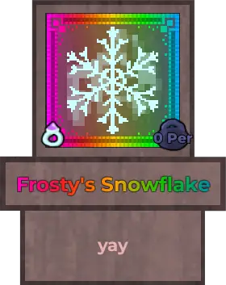
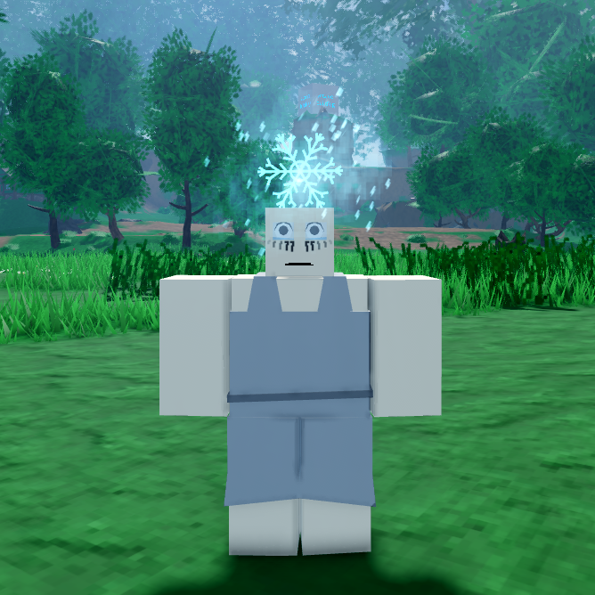
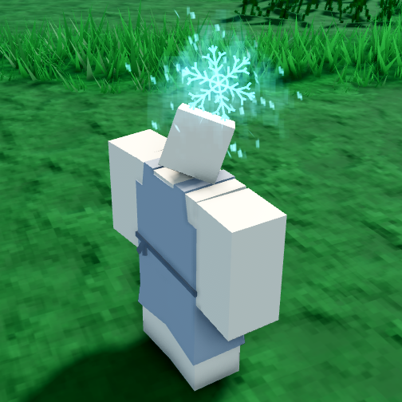
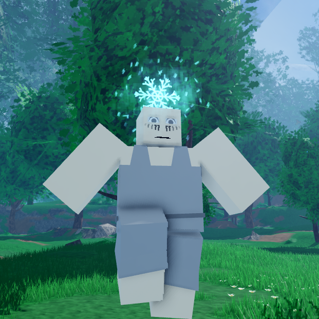
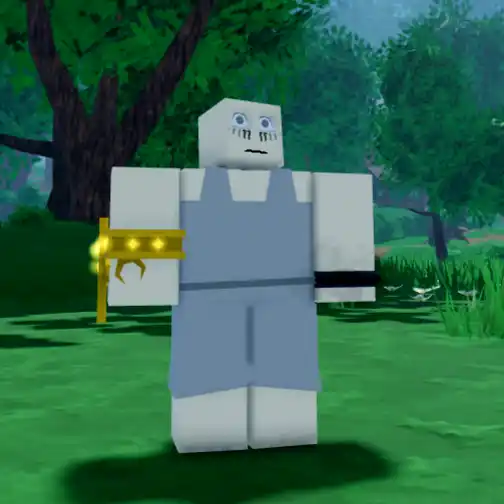

Frosty's Snowflake

Info
Slot: Accessory
Recolorable?: Yes
Unique Colors: None
Particle Effects: Yes
Sound Effects: None
Owner: frostyvcat
Appearance & Effects
In-game description: yay
Frosty's Snowflake is a large snowflake that follows the player around. It glows and emits snow-like particle effects. It also has an icy aura around it. Frosty's Snowflake is an icy blue by default, but can be recolored.
Inspiration
Frosty's Snowflake has been removed from the game. It was replaced with the Forgotten Twin Bands by request of the owner, frostyvcat, who did not like the look of the snowflake. Frosty's Snowflake was inspired by its owners name, similar to Solar's System.

A player wearing Frosty's Snowflake

Frosty's Snowflake from the back
Image Gallery

Another angle of Frosty's Snowflake

The Forgotten Twinbands, which replaced Frosty's Snowflake